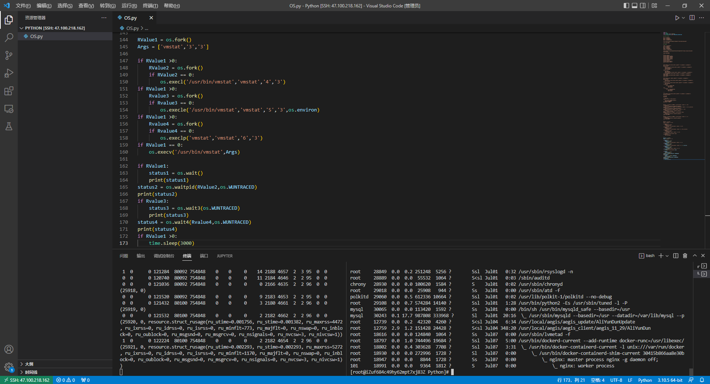
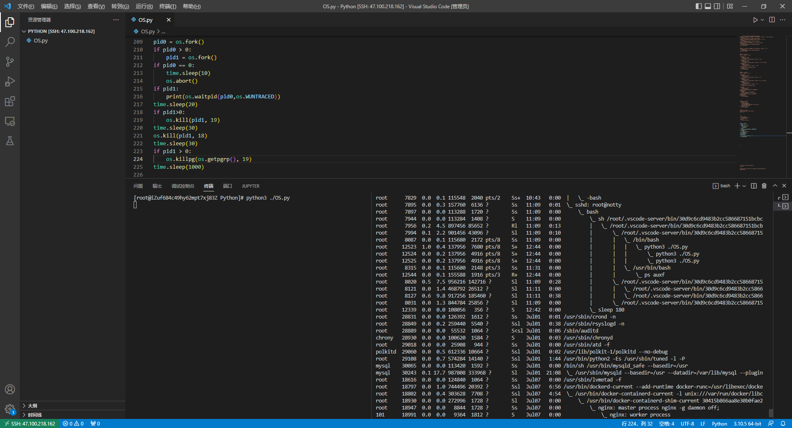
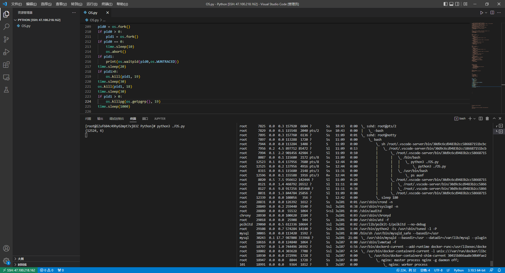
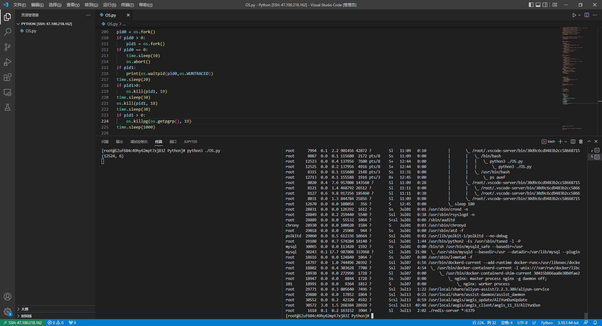
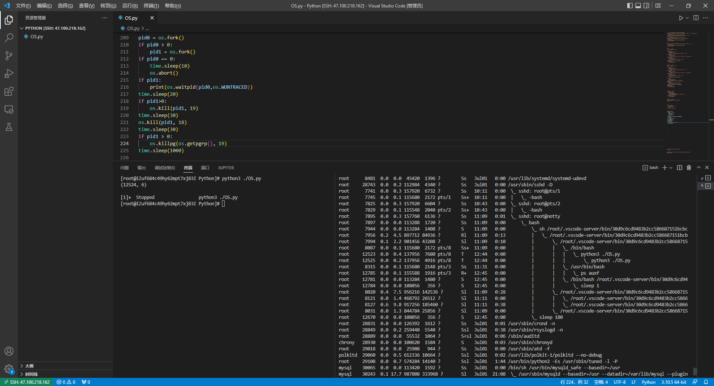
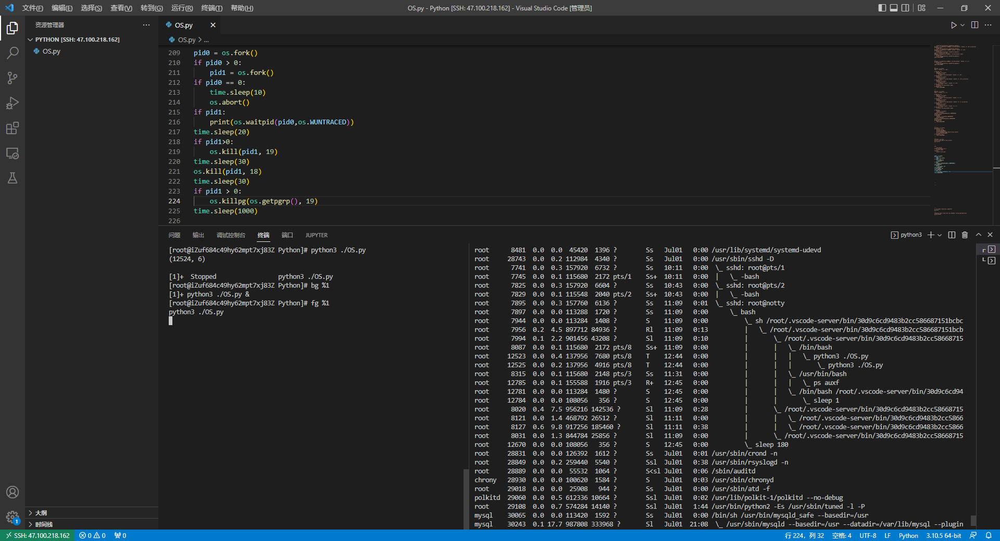
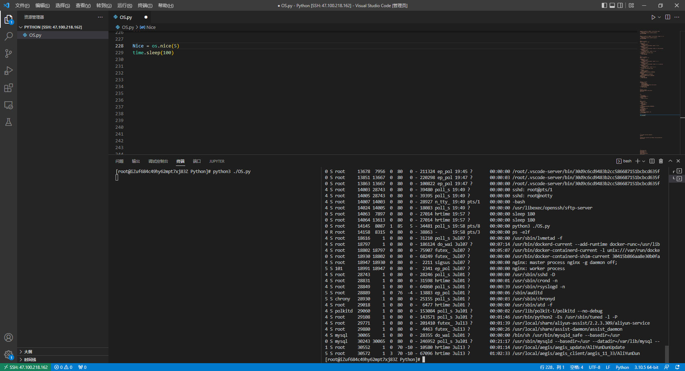

标准库
前述
1、参考来源：《Python语言参考手册》Python标准库
2、Python版本：3.10.5
3、Python手册版本：3.10.5
4、Python手册参考地址：
https://docs.python.org/zh-cn/3.10/library/
5、本篇内容只解析Linux下适用的函数。
6、本篇内容主要解析并演示本人认为重要性偏高及使用率较高的。
标准库
通用操作系统服务
os
进程参数
1、进程及进程间关系
【1】os.getpid() ： Return the current process id.
【2】os.getppid() ： Return the parent’s process id.
【3】os.getpgrp() ： Return the id of the current process group.
【4】os.getpgid(pid) ： Return the process group id of the process with process id pid.

2、进程属主属组
【1】os.getlogin() ： Return the name of the user logged in on the controlling terminal of the process.
【2】os.getuid() ： Return the current process’s real user id.
【3】os.getgid() ：Return the real group id of the current process.
【4】os.geteuid() ： Return the current process’s effective user id.
【5】os.getegid() ： Return the effective group id of the current process.
【6】os.getgroups() ： Return list of supplemental group ids associated with the current process.

3、进程环境信息
【1】os.environ ：A mapping object where keys and values are strings that represent the process environment.
【2】os.uname() ： Returns information identifying the current operating system.
【3】os.ctermid() ： Return the filename corresponding to the controlling terminal of the process.
【4】os.getenv(key, default=None) ： Return the value of the environment variable key if it exists, or default if it doesn’t. key, default and the result are str.

进程管理
进程创建
1、os.fork() : Fork a child process. Return 0 in the child and the child’s process id in the parent.

2、spawn ：Execute the program path* in a new process.
【1】函数列表
- os.spawnl(mode, path, ...)
- os.spawnle(mode, path, ..., env)
- os.spawnlp(mode, file, ...)
- os.spawnlpe(mode, file, ..., env)
- os.spawnv(mode, path, args)
- os.spawnve(mode, path, args, env)
- os.spawnvp(mode, file, args)
- os.spawnvpe(mode, file, args, env)
【2】名称后缀解释
- spawn* 函数的 "l" 和 "v" 变体不同在于命令行参数的传递方式。
- 结尾包含第二个 "p" 的变体将使用 PATH 环境变量来查找程序 file。
- 对于以e结尾的函数，env 参数是一个映射，用于定义新进程的环境变量（代替当前进程的环境变量）。
【3】mode 参数的可取值
- os.P_NOWAIT
- os.P_NOWAITO
- os.P_WAIT

3、exec* ： These functions all execute a new program, replacing the current process;
【1】函数列表
- os.execl(path, arg0, arg1, ...)
- os.execle(path, arg0, arg1, ..., env)
- os.execlp(file, arg0, arg1, ...)
- os.execlpe(file, arg0, arg1, ..., env)
- os.execv(path, args)
- os.execve(path, args, env)
- os.execvp(file, args)
- os.execvpe(file, args, env)

进程回收
1、os.wait() ： Wait for completion of a child process, and return a tuple containing its pid and exit status indication
2、os.waitpid(pid, options) ： Wait for completion of a child process given by process id pid, and return a tuple containing its process id and exit status indication
3、os.wait3(options) ： Similar to waitpid(), except no process id argument is given and a 3-element tuple containing the child’s process id, exit status indication, and resource usage information is returned.
4、os.wait4(pid, options) ： Similar to waitpid(), except a 3-element tuple, containing the child’s process id, exit status indication, and resource usage information is returned.

进程退出
1、os._exit(n) ： Exit the process with status n, without calling cleanup handlers, flushing stdio buffers, etc.
注：sys.exit(n)讲Python运行时服务时再讲解

进程信号
1、os.abort() ： Generate a SIGABRT signal to the current process.
2、os.kill(pid, sig) ： Send signal sig to the process pid.
3、os.killpg(pgid, sig) ： Send the signal sig to the process group pgid.






进程优先级
1、os.nice(increment)

进程其他
os.times() ： Returns the current global process times. The return value is an object with five attributes.
os.system(command) ： Execute the command (a string) in a subshell.
os.popen(cmd, mode='r', buffering=- 1) ： Open a pipe to or from command cmd.

文件描述符
1、os.fdopen(fd, args, *kwargs) ： Return an open file object connected to the file descriptor fd.
2、os.open(path, flags, mode=0o777, *, dir_fd=None) ： Open the file path and set various flags according to flags and possibly its mode according to mode.
3、os.close(fd) ： Read at most n bytes from file descriptor fd.
4、os.read(fd, n) ： Read at most n bytes from file descriptor fd.
5、os.write(fd, str) ： Write the bytestring in str to file descriptor fd.
6、os.fsync(fd) ： Force write of file with filedescriptor fd to disk.
7、os.fstatvfs(fd) ： Return information about the filesystem containing the file associated with file descriptor fd, like statvfs().
8、os.fstat(fd) ： Get the status of the file descriptor fd. Return a stat_result object.
9、os.pipe() ： Create a pipe. Return a pair of file descriptors (r, w) usable for reading and writing, respectively.

文件和目录
1、os.stat(path, *, dir_fd=None, follow_symlinks=True)：Get the status of a file or a file descriptor. Perform the equivalent of a stat() system call on the given path.
2、os.lstat(path, *, dir_fd=None)：Perform the equivalent of an lstat() system call on the given path. Similar to stat(), but does not follow symbolic links.
3、os.listdir(path='.')：Return a list containing the names of the entries in the directory given by path.
4、os.pathconf(path, name)：Return system configuration information relevant to a named file.
5、os.getcwd()：Return a string representing the current working directory.
6、os.chdir(path)：Change the current working directory to path.
7、os.sync()：Force write of everything to disk.

time
1、time.time() ： Return the time in seconds since the epoch as a floating point number.
2、time.ctime([secs]) ： Convert a time expressed in seconds since the epoch to a string of a form
3、time.gmtime([secs]) ： Convert a time expressed in seconds since the epoch to a struct_time in UTC in which the dst flag is always zero.
4、time.localtime([secs]) ： Suspend execution of the calling thread for the given number of seconds.
5、time.sleep(secs) ： Suspend execution of the calling thread for the given number of seconds.
6、time.process_time() ： Return the value (in fractional seconds) of the sum of the system and user CPU time of the current process.
7、time.thread_time() ： Return the value (in fractional seconds) of the sum of the system and user CPU time of the current thread.
platform
01、platform.architecture(executable=sys.executable, bits='', linkage='') ： Queries the given executable (defaults to the Python interpreter binary) for various architecture information.
02、platform.machine() ： Returns the machine type
03、platform.node() ： Returns the computer’s network name (may not be fully qualified!).
04、platform.platform(aliased=0, terse=0) ： Returns a single string identifying the underlying platform with as much useful information as possible.
05、platform.processor() ： Returns the (real) processor name
06、platform.python_build() ： Returns a tuple (buildno, builddate) stating the Python build number and date as strings.
07、platform.release() ： Returns the system’s release
08、platform.system() ： Returns the system/OS name
09、platform.version() ： Returns the system’s release version
10、platform.uname() ： Fairly portable uname interface.
11、platform.freedesktop_os_release() ： Get operating system identification from os-release file and return it as a dict.